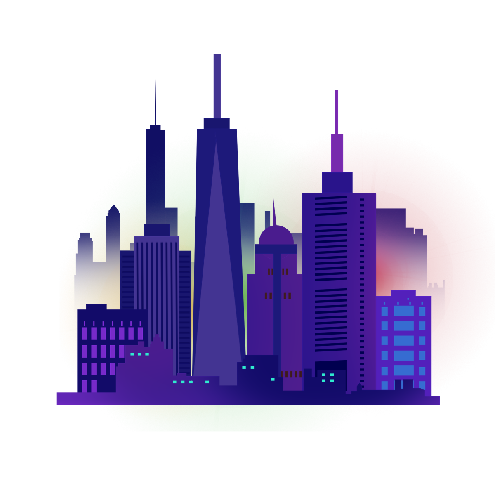
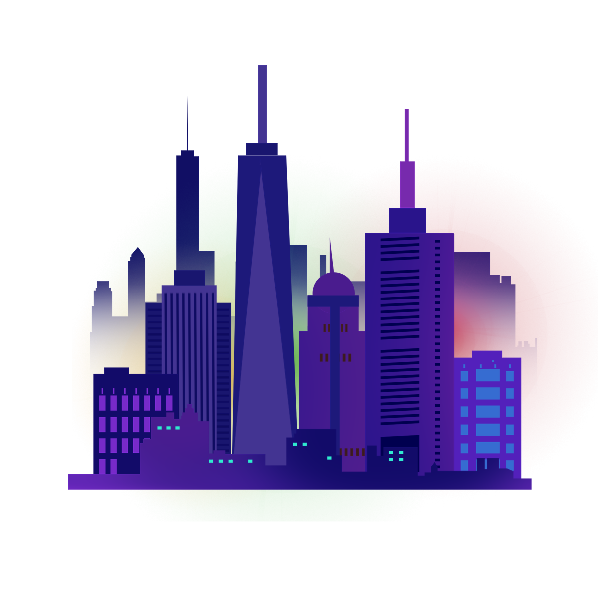

I'm Faraj.
A College Student.

A College Student.

My name is Faraj Siddique I am a student studying Computer Science at the Pennsylvania State University College of Engineering.

I work at Willen Pharmacy, an independent pharmacy residing in Bronx, New York.
I work a position of both a pharmacy technician and a retail manager where I manage and sell the over-the-counter products and assist the pharmacist in preparing medicine for customers.
Over this past winter break, I volunteered my time at a COVID-19 testing clinic through a partnership between Amiable Pharmacy and Elmhurst Hospital in Queens, New York.

From my time working in retail and as a pharmacy technician, I have picked up how to work effectively and efficiently with both my customers and my peers.

From my full-time position at Willen Pharmacy to being a student at Penn State, I have picked up good self-management skills.
These skills include time-management, self-motivation and stress management skills which I believe will assist me in my professional career.

Feel free to shoot me an email with the button below or at farajsid05@gmail.com and check out my personal page to find out more about
my personal hobbies, interests and personal projects I have been working on!